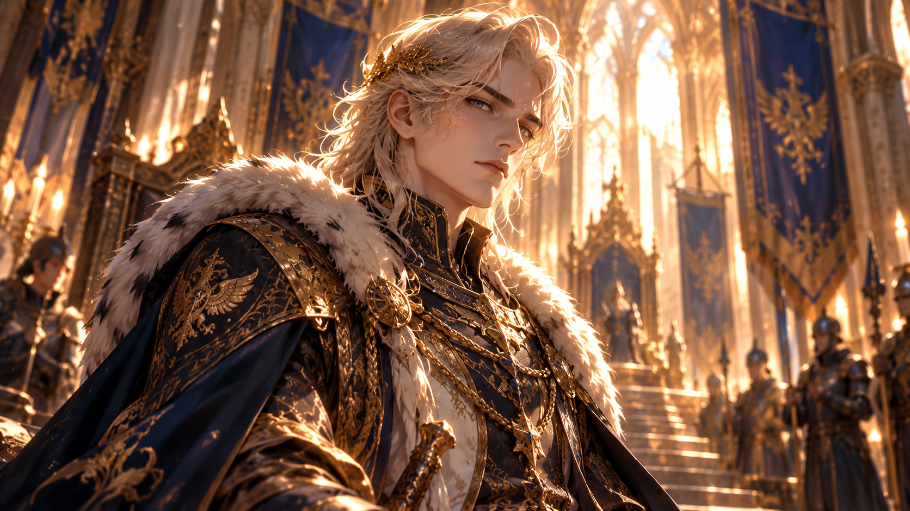

✦ THE RETURN OF THE KNIGHT ✦
A HERO'S HOMECOMING
The bells of Aurilia ring once more. The people gather beneath the royal banners. Hope has returned to the kingdom.
They are not waiting for a miracle. They are welcoming the one who made it possible.
✦ THE FINAL CHAPTER ✦
Four trials conquered. Ancient knowledge restored. Beyond the gates of Aurilia, a kingdom awaits the return of its hero.
✦ THE RETURN OF THE KNIGHT ✦
The bells of Aurilia ring once more. The people gather beneath the royal banners. Hope has returned to the kingdom.
They are not waiting for a miracle. They are welcoming the one who made it possible.
✦ THE ROYAL ARCHIVIST ✦
PRESS ENTER TO CONTINUE

✦ A ROYAL PROCLAMATION ✦
PRESS ENTER TO CONTINUE
✦ THE FOUR ROYAL TRIALS ✦
Four trials. Four victories. Four ancient seals restored to their rightful glory.
THE SEAL OF FOUNDATION
THE SEAL OF WISDOM
THE SEAL OF THE STARS
THE SEAL OF RESTORATION
✦ BEFORE THE ROYAL COURT ✦
Beneath the ancient banners, the Knight stands before the throne. The Royal Court falls silent.
No longer a stranger. No longer an untested candidate. A name worthy of the Royal Archives.
THE ROYAL ARCHIVES OF AURILIA
By royal decree, the kingdom honours
For courage, wisdom and unwavering resolve in restoring the lost knowledge of Aurilia.
✦ THE DAWN OF A NEW ERA ✦
Where darkness once reigned, the first light of a new age rises.
✦ THE ROYAL ARCHIVES · FINAL INSCRIPTION ✦
Four royal trials completed. A kingdom restored.
“You entered as a stranger.
You leave as a legend.”